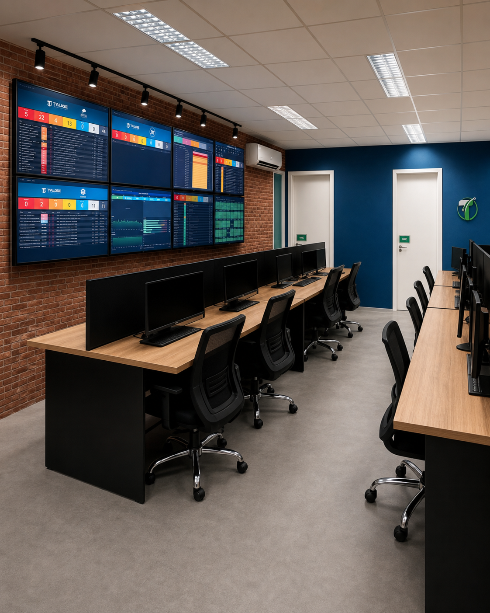

Visão sistêmica
Infraestrutura, dados e aplicações analisados como uma única operação.

A Tauge combina profundidade técnica e proximidade executiva para sustentar ambientes em que disponibilidade, segurança e desempenho são inegociáveis.
Desde 2003, transforma cenários complexos em operações mais previsíveis, protegidas e preparadas para evoluir — do diagnóstico à sustentação contínua.
Infraestrutura, dados e aplicações analisados como uma única operação.
Decisões técnicas orientadas por risco, continuidade e impacto no negócio.
Especialistas ao lado das equipes, com comunicação clara e atuação consultiva.
Apresente seu cenário e os riscos que sua empresa precisa administrar.
Agendar diagnóstico